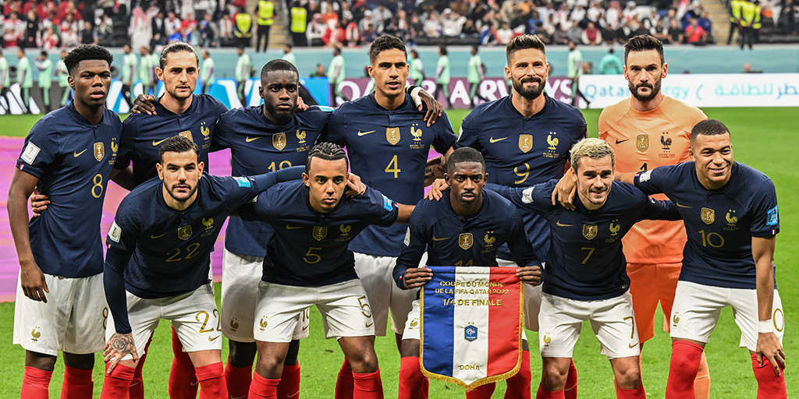

BANDERA |
NOMBRE |
PUNTOS |
FRANCIA |
1852 |
Francia es ampliamente reconocida como uno de los países con el mejor fútbol del mundo, gracias a una combinación de éxitos internacionales, un sistema de formación de jugadores de élite, y una rica historia futbolística. En cuanto a logros, Francia ha ganado dos Copas del Mundo (1998 y 2018) y ha llegado a la final en varias otras ocasiones, lo que la coloca entre las selecciones más exitosas del siglo XXI. La victoria en 1998, con Zinedine Zidane como la figura más destacada, marcó un antes y un después en el fútbol francés, consolidando a los "Bleus" como una potencia en la escena internacional. La generación que siguió, liderada por jugadores como Thierry Henry, Patrick Vieira y, más recientemente, Kylian Mbappé, ha mantenido a Francia en la élite del fútbol mundial. En 2018, con un equipo joven y talentoso, Francia volvió a alzar la Copa del Mundo, demostrando su capacidad para renovar generaciones y seguir siendo competitiva al más alto nivel. El éxito de Francia no es casualidad, sino el resultado de un sistema de formación de jugadores excepcional, donde la academia del Clairefontaine se destaca como uno de los principales centros de desarrollo futbolístico a nivel global. Esta academia ha producido una generación tras otra de jugadores que se convierten en estrellas a nivel de clubes y selecciones. El fútbol francés también ha exportado talento a las principales ligas del mundo, lo que ha permitido que sus jugadores se desarrollen en los entornos más competitivos. A nivel de clubes, la Ligue 1, si bien históricamente ha estado algo eclipsada por ligas más populares como la Premier League o La Liga, ha crecido exponencialmente en popularidad y nivel, gracias a equipos como el París Saint-Germain (PSG), que ha atraído a algunas de las mayores estrellas del fútbol mundial. La diversidad cultural y étnica que caracteriza a la sociedad francesa también ha jugado un papel importante en la composición de su equipo nacional, permitiendo una mezcla única de estilos y habilidades. Este crisol de influencias ha dotado a la selección de un dinamismo y una versatilidad que le permite adaptarse a distintos estilos de juego y superar a los rivales más poderosos. Además, la federación francesa ha demostrado una capacidad excepcional para gestionar a su equipo, asegurando estabilidad y continuidad en sus proyectos deportivos.
